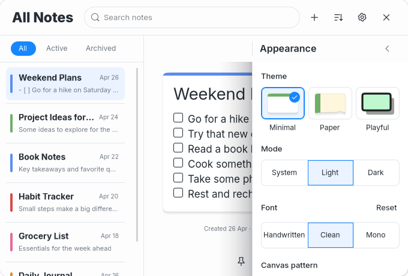
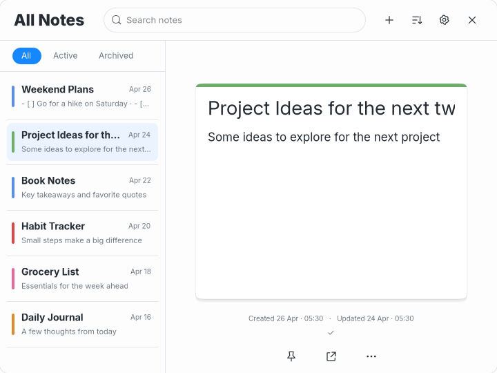
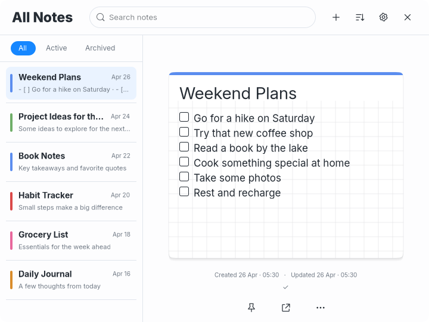
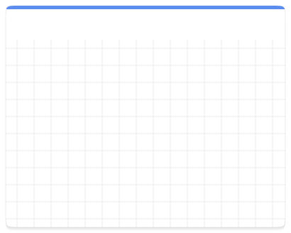
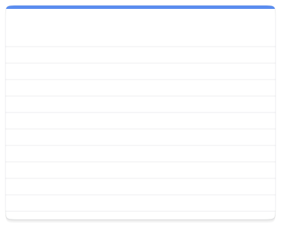

Minimal Light consistency and canvas patterns
Requested consistency and canvas-pattern fixes, under visual review. Minimal Dark remains under review. No commit or push.
Actual GTK captures with disposable notes. Changes cover corners, row and paragraph spacing, Appearance header placement, and existing canvas pattern controls. Theme colors, fonts, shadows, Paper tear and Playful outline remain distinct.
| Measurement | All themes now |
|---|
| Main header content height | 58px, plus 1px divider |
| Filter band / pill | 44px / 24px |
| Filter padding / first-row gap | 10px above/below / 8px |
| Row content / divider gap | 55px / 5px |
| Paragraph spacing | 1px above / 3px below |
| Control / grouped outer corners | 8px, with connected segment interiors |
| Note corner radius | 18px; Paper tear and Playful waves retained |
Before and after, All Notes 720×540
Before this consistency correction After this consistency correction
After this consistency correction Appearance at default and minimum sizes
 Appearance aligned with filters, 720×540
Appearance aligned with filters, 720×540
Same header/drawer alignment, 680×460Sidebar spacing and long titles
Before sidebar spacingConsistent rounded highlights and separate straight dividers Selected row and hovered Book Notes
Long Project Ideas title selected beside its date Patterns applied through Settings
All four controls were selected through the live Settings widgets. Each produces a different Cairo canvas in both editors, persists in config and updates existing notes that follow Default pattern. Explicit per-note overrides remain intact.
Plain canvas, actual individual note 352×376Dots canvas, actual individual note 352×376 Grid canvas, actual individual note 352×376Ruled canvas, actual individual note 352×376
Grid canvas, actual individual note 352×376Ruled canvas, actual individual note 352×376 Dots in All Notes, 720×540
Square grid in All Notes, 720×540 Default/minimum notes and tools
Default note, 352×376Minimum note, 300×280 Open native tools, note dimensions preserved
Open native tools, note dimensions preserved Pattern drawing evidence
Only the note background drawing is captured here, excluding blinking carets and text. Pairwise PNG comparisons assert each pattern differs in each view. The reopened database verifies note Grid override persistence. A Grid override produces exactly the same background with global Plain selected. Returning to Default clears the override.
Plain main canvas, Cairo drawing onlyDots main canvas, Cairo drawing only
Grid main canvas, Cairo drawing only
Ruled main canvas, Cairo drawing only Verification and remaining differences
Formatting, 22 tests, strict Clippy, release build, diff checks and the existing GTK shared-editor regression pass. Disposable GTK checks verify matching content, exact main/note default/minimum sizes, tools preserving note sizes, sidebar geometry, paragraph spacing, Appearance header placement, all four persisted global patterns and note override persistence.
Font sizes and families retain their prior theme choices. Font metrics still differ between Inter and Virgil. Paper keeps its torn bottom; Playful retains its seeded wave outline. Native pointer resizing, Escape/timer and broad milestone checks were not repeated. Four-theme review. Stop for visual review. No commit or push.